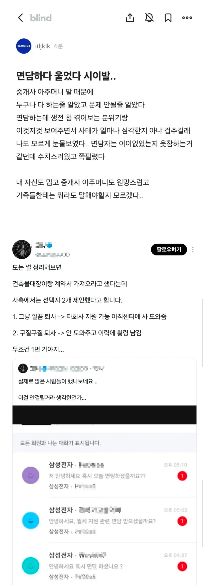

20만원때문에 회사짤림 ㄷㄷ

20만원때문에 회사짤림 ㄷㄷ
ESG윤리경영 교육 안했냐
예전에 MBC 아나운서들도 이런 비슷한 짓 했잖아
순진하게 생겨갖고 그럴 줄이야
중요한 내용 빼먹고 짜집기?된 내용으로 불타는거 같은대... 평수 룸수 정도 속인 케이스나 대부분의 케이스는 올해 고과 하위고과 정도의 견책으로 끝내는걸로 암. 퇴사이야기 나오는 케이스는 아에 작정하고 이미 가족명의 집?이나 전세로 살고있는 집에다 이중 계약서 쓰고 대놓고 횡령한 케이스들이고 그렇게 많지 않다고 들음. -이 내용이 빠저서 댓글 곱창 났누...
횡령인데 괜찮다고 하는 애들은 뭐임? 어디 ㅈ소만 다니나